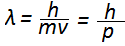

लुईस दे-ब्राॅग्ली
लुईस दे-ब्राॅग्ली के अनुसार, पदार्थ, तरंग तथा कण दोनों प्रकार की अर्थात द्वैत प्रकृति प्रदर्शित करते है।
लुई द ब्रॉई एक फ़्रांसिसी भौतिकी वैज्ञानिक और नोबेल पुरस्कार विजेता थे। उन्होंने १९२४ में सारे पदार्थों के तरंग-कण द्विरूप होने का दावा किया था और उसके लिए गणित विकसित किया था। यह भविष्यवाणी आगे चलकर प्रयोगों में सिद्ध हो गयी। इनके नाम को भारतीय उपमहाद्वीप में अक्सर "लुई दि ब्रॉग्ली" उच्चारित किया जाता है, जो वास्तव में सही उच्चारण नहीं है।
परिचय
लूई विक्टर द ब्रॉग्ली का जन्म फ्रांस के दिएप नगर में हुआ था। इन्होंने १९०१ ईo में पैरिस विश्वविद्यालय से इतिहास के स्नातक तथा १९१३ ईo में विज्ञान के स्नातककी उपाधि प्राप्त की।सन् १९२४ में ब्रॉग्ली ने डाक्टर की उपाधि के लिये अपना शोधप्रबंध उपस्थित किया, जिसका शीर्षक था 'क्वांटम सिद्धांत संबंधी गवेषणाएँ'। १९२९ ईo में ब्रॉग्ली को नोबेल पुरस्कार मिला और उसी वर्ष फ्रांसीसी वैज्ञानिक अकादमी ने इन्हें प्वाँकरे पदक प्रधान किया। १९३३ ईo में ये उस अकादमी के सभासद भी निर्वाचित हो गए और १९४२ ईo में उसके स्थायी मंत्री भी नियुक्त हो गए। सन् १९२८ में प्वाँकरे इंस्टिट्यूट में सैद्धांतिक भौतिकी के प्रधानाध्यापक नियुक्त हुए। इन्हीं के प्रयास से यह संस्था समकालीन भौतिक सिद्धांतों के अध्ययन के लिये एक केंद्र बन गई। ब्रॉग्ली ने परमाणविक कणिकाओं तथा प्रकाश-विज्ञान पर महत्वपूर्ण वैज्ञानिक पुस्तकें प्रकाशित की हैं। सन् १९४५ में फ्रांसीसी सरकार ने पारमाणिक ऊर्जा के उच्च आयोग की स्थापना की और ब्रॉग्ली को उसका तकनीकी परामर्शदाता नियुक्त किया। साहित्यिक कार्य के कारण १९४५ ईo में ये फ्रांसीसी अकादमी के सदस्य निर्वाचित हुए। ये फ्रांसीसी लेखकसंघ के सम्मानित सभापति रहे और १९५२ ईo में इन्हें वैज्ञानिक लेखन की उत्कृष्टता के लिये कलिंग प्रतिष्ठान द्वारा प्रदत्त प्रथम पुरस्कार मिला था।
प्रत्येक गतिशील कण के साथ इन्होंने एक आनुषंगिक तरंग की कल्पना की। जिन कणों का द्रव्यमान प्रेक्षणग्राह्य परिणाम का होता है और जिनका अध्ययन चिरप्रतिष्ठित यांत्रिकी से किया जाता है उनमें से कणिकाओं के गुणों का ही लगभग पूर्ण प्राधान्य रहता है, किंतु परमाणुस्तरीय कणिकाओं में तरंगीय गुण प्रमुख हो जाते हैं। इन सिद्धांतों का प्रायोगिक सत्यापन बेल टेलिफोन की प्रयोगशालाओं में कुछ अमरीकी भौतिक वैज्ञानिकों ने किया। इलेक्ट्रॉन और प्रोटॉन के सदृश पारमाणविक कणिकाओं में उनकी आनुषंगिक तरंगों के कारण प्रकाश और एक्स किरणों के समान ही विवर्तन की घटनाओं का प्रायोगिक अध्ययन किया। बाद में इन्हीं विचारों का व्यावहारिक उपयोग चुंबकीय लेंसों के विकास में हुआ, जिनपर इलेक्ट्रॉन सूक्ष्मदर्शी आधारित है।